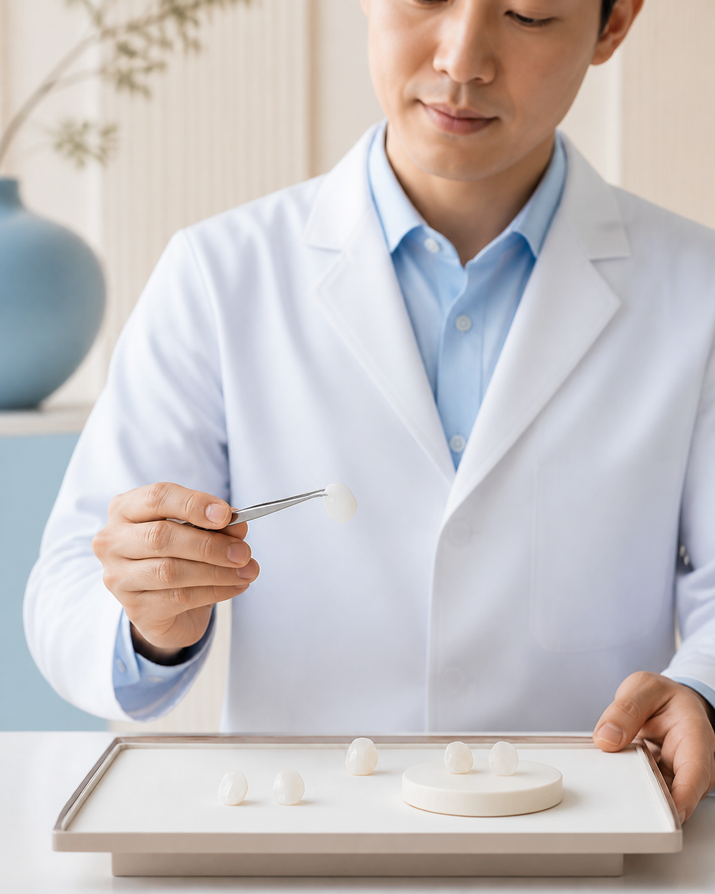
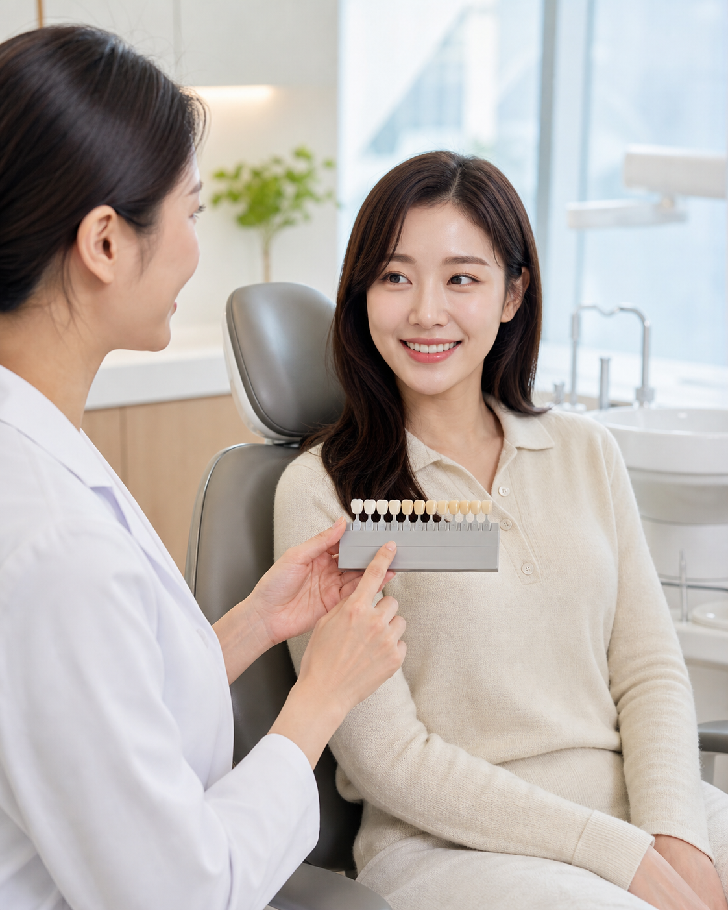
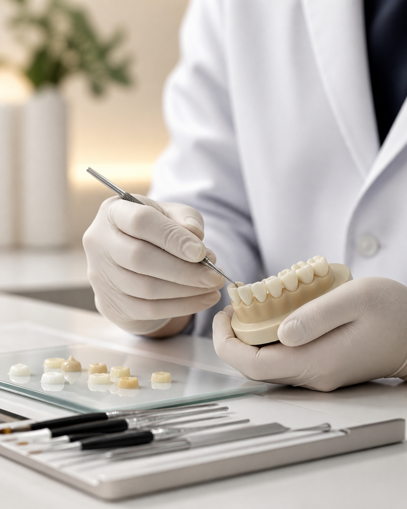
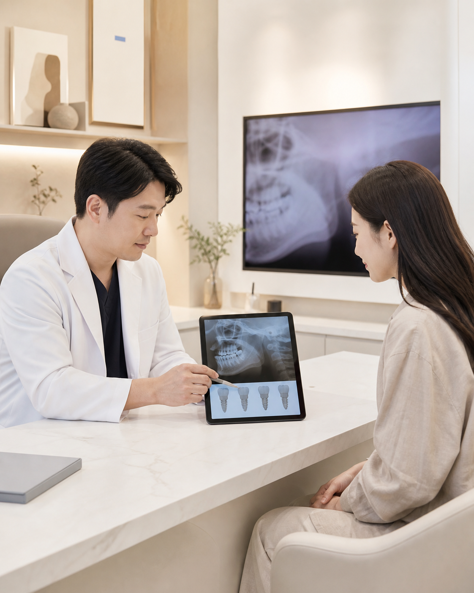
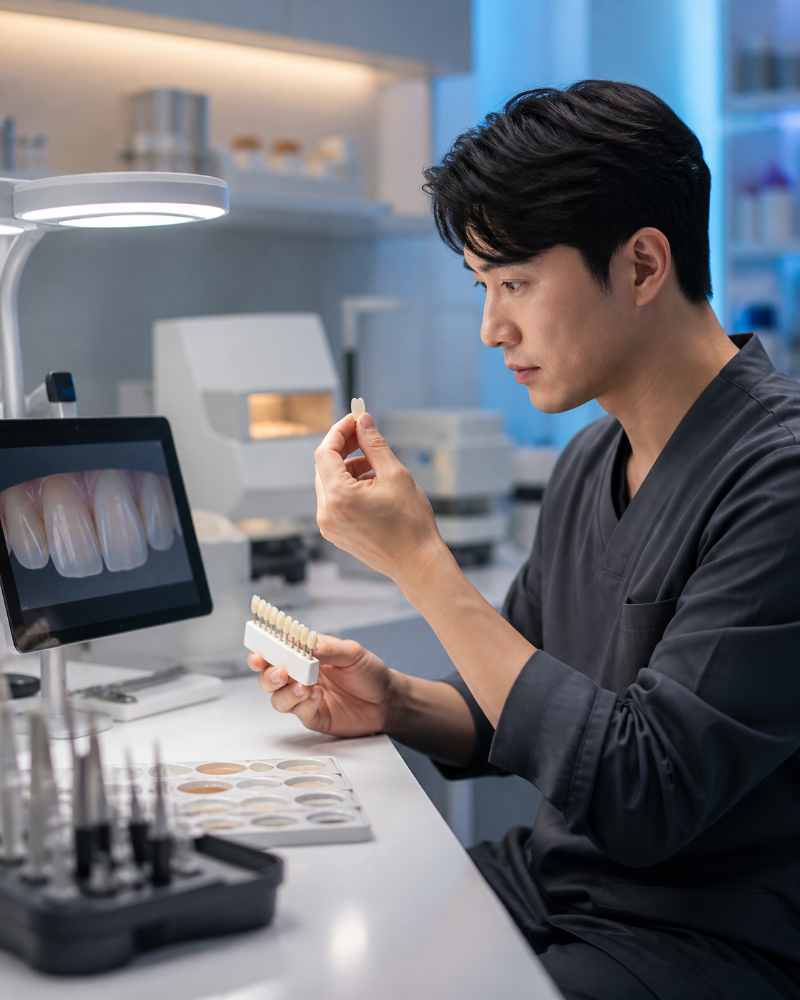
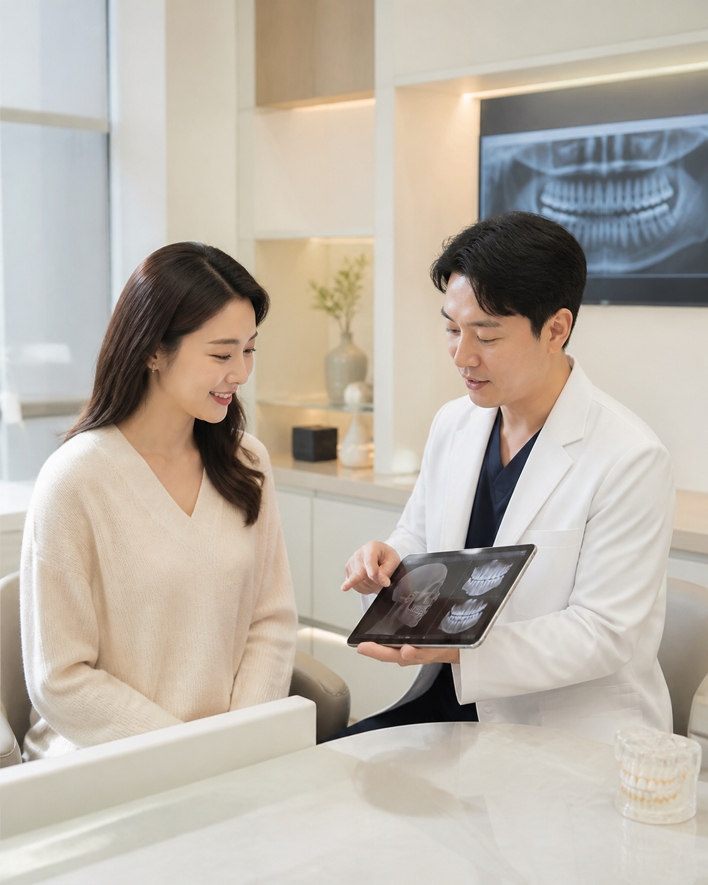
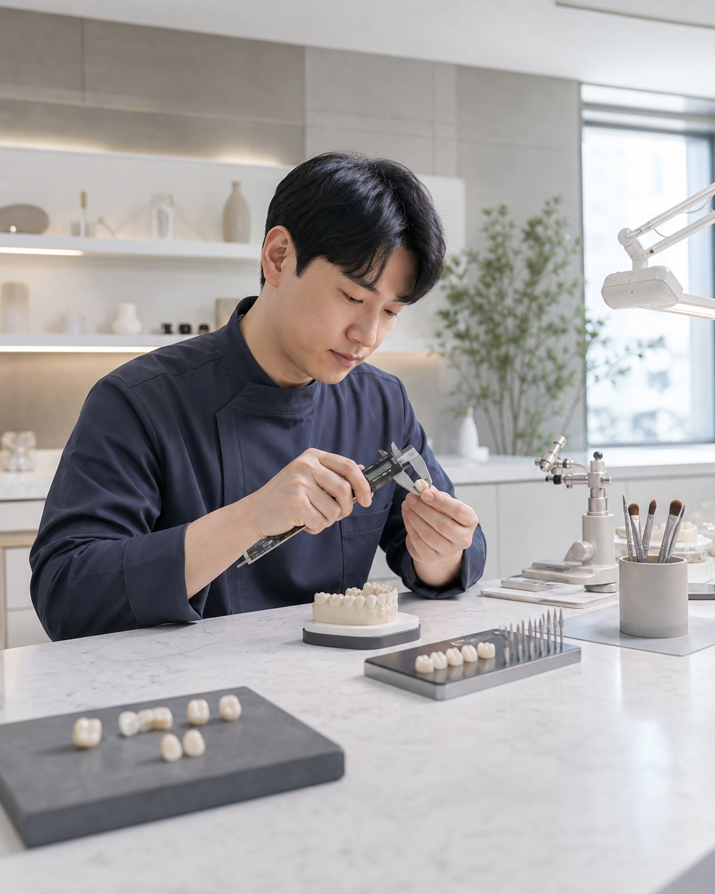
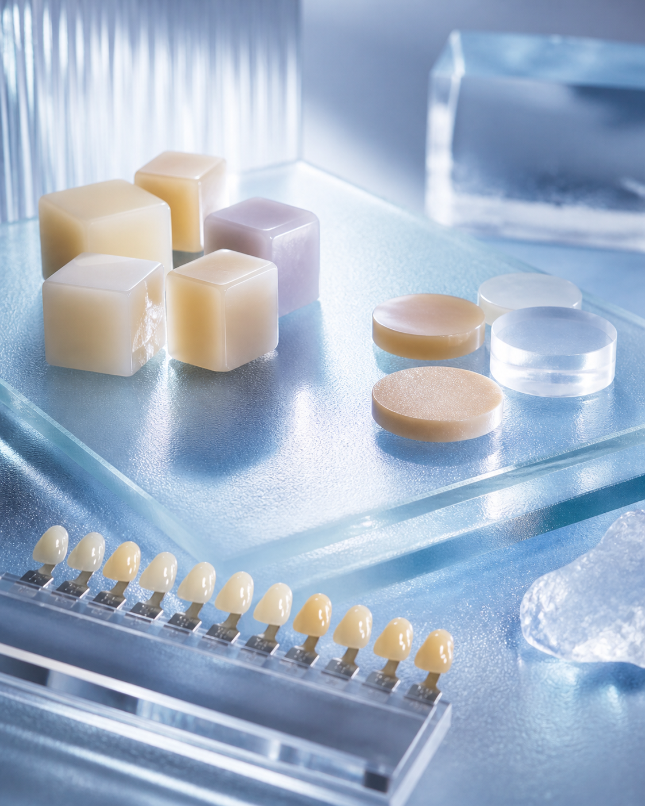

라미네이트
치아의 겉 표면인 법랑질에 얇은 세라믹 판을 붙여 치아의 색상과 형태를 조화롭게 다듬는 방법입니다.
365서울감동치과는 단순히 치아 배열만 바라보지 않습니다.
구강 상태와 얼굴의 모양, 잇몸, 입술, 피부톤까지 종합적으로 고려해 디자인합니다.

치아의 겉 표면인 법랑질에 얇은 세라믹 판을 붙여 치아의 색상과 형태를 조화롭게 다듬는 방법입니다.

사람마다 피부색이 다르듯 치아의 색도 다릅니다. 착색 원인과 현재 밝기를 확인해 본래의 색을 회복하거나 더 밝고 환하게 만듭니다.

앞니가 벌어졌거나 깨졌다면 치아색 레진을 이용해 주변 자연치아와 잘 어울리는 형태로 디자인합니다.
365서울감동치과 심미치료
환자마다 다른 치아, 치료 계획도 달라야 합니다
라미네이트는 심미적인 개선을 위한 치료이지만, 치아를 과도하게 삭제하면 시림과 민감도 증가, 보철물 유지 문제로 이어질 수 있습니다.
치아 두께와 배열, 교합, 잇몸 상태를 정밀하게 확인하고 자연치아를 최대한 보존할 수 있는 방향으로 치료 가능 여부를 판단합니다.

원내 기공소 기반 개인 맞춤 제작
원내 기공소 시스템을 기반으로 환자별 치아 형태와 색상에 맞는 보철물을 제작합니다.
의료진과 기공 과정이 긴밀하게 소통하며 치아의 모양과 색, 표면 질감을 함께 조율합니다.

치료 직후보다 더 오래 보는 계획
치료 직후의 심미성뿐 아니라 장기적인 사용까지 고려합니다.
치아 배열과 교합, 잇몸 상태, 생활 습관을 함께 확인해 보철물이 안정적으로 유지될 수 있는 치료 방향을 계획합니다.

정밀한 적합과 접합
치아와 보철물 사이의 적합도와 접합 상태를 중요하게 고려합니다.
치아 표면과 보철물이 자연스럽게 이어지도록 설계해 자연스러운 심미성과 안정적인 사용감을 함께 목표로 합니다.

좋은 재료를 활용한 심미치료
같은 레진과 세라믹이라는 이름이어도 품질과 내구성, 심미성은 달라질 수 있습니다.
치료 목적에 맞는 재료를 선택하고 투명도와 색, 강도를 세심하게 확인해 자연스러운 결과를 완성합니다.

심미치료 사례
치료 이해를 위한 연출 이미지이며 실제 결과는 개인의 구강 상태와 치료 범위에 따라 달라질 수 있습니다.